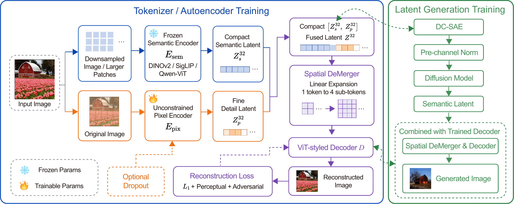
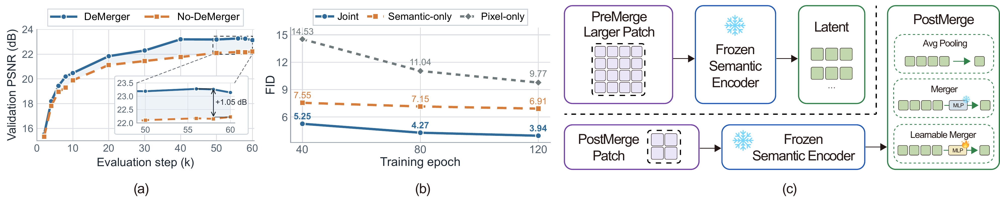
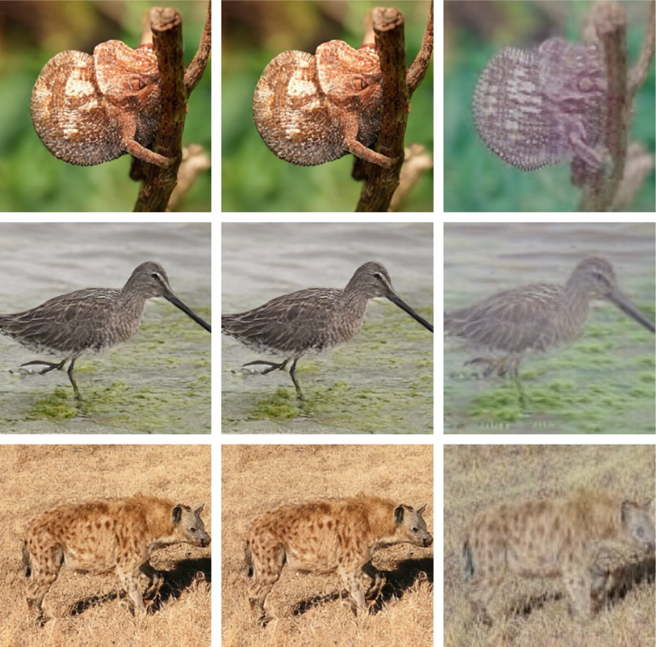

A One-Minute Introduction to DC‑SAE
High-compression tokenizers are essential for scaling latent image generative models. However, aggressive compression creates a fundamental tradeoff between reconstruction fidelity and generation efficiency: a high-compression image encoder increases the learning difficulty of diffusion training, resulting in slow convergence. Recent representation autoencoders speed up diffusion training by replacing VAE encoders with pretrained semantic encoders, yet they are typically limited to moderate compression and lose pixel-level details necessary for faithful reconstruction.
To achieve both high compression and fast diffusion training, we propose DC-SAE, a Decoupled Compact Semantic Autoencoder. DC-SAE consists of two key components: (1) a macro-level architecture that leverages semantic encoders to enable higher compression ratios, and (2) a pixel-level encoder that preserves low-level details for high-fidelity reconstruction. On ImageNet 512×512, DC-SAE achieves 32× spatial compression with 29.79 PSNR and 3.37 gFID, outperforming the previous state-of-the-art high-compression tokenizer DC-AE by 13.5% and 54.9% on PSNR and gFID respectively, with higher throughput and faster diffusion convergence. Beyond class-conditional generation, a 1.6B-parameter DiT using DC-SAE achieves 0.84 on GenEval and 86.007 on DPG-Bench at 1024×1024.
At the same 32× spatial compression as DC-AE, DC-SAE reconstructs more faithfully, generates better images, runs its autoencoder over 4× faster, and scales to text-to-image generation.
Three design choices that make semantic tokenizers work at 32×.
Adapt a frozen DINOv2 / SigLIP / Qwen-ViT from 16× to 32× without retraining it. We compress before semantic encoding, which beats merging tokens after encoding.
An unconstrained pixel encoder recovers texture, color and edges. The frozen semantic branch keeps the latent diffusion-friendly. Neither needs extra latent regularization.
Each latent token expands into 4 sub-tokens, but only for the ViT decoder. The DiT still sees the short 32× sequence.
A frozen semantic encoder is adapted to a 32× token grid, and an unconstrained pixel branch keeps local detail. The two latents are fused and decoded by a ViT decoder with Spatial DeMerger. The DiT is trained on the fused compact latent.

Simply downsizing the input to push a frozen semantic encoder to 32× keeps the global structure, but reconstruction drops to about 15 PSNR at 256×256. The latent also loses the fast convergence semantic features usually give, reaching only 7.15 gFID after 80 DiT epochs. The semantic encoder was never trained to be invertible, so it throws away color statistics, texture, boundaries and high-frequency detail. Adding a jointly trained pixel branch fixes both problems.

(a) Spatial DeMerger improves validation PSNR (+1.05 dB). (b) DiT convergence at 32×: the joint semantic–pixel latent reaches 4.27 gFID at 80 epochs, vs 7.15 for semantic-only and 11.04 for pixel-only. (c) Pre-merge vs post-merge semantic compression.
We reconstruct images from the full latent, with the semantic part masked, and with the pixel part masked. Masking the semantic branch barely changes the output. Masking the pixel branch wrecks it.
So the pixel branch carries appearance: texture, color and spatial detail. The semantic branch shapes the joint latent into something a DiT learns quickly. The frozen encoder does not have to carry low-level information; the two branches split the work.

Left to right: full latent, semantic branch masked, pixel branch masked.
A DiT-XL is trained for 400 epochs in the frozen 32× DC-SAE latent, following the DC-AE training protocol.
| Generative Model | Autoencoder | Comp. | Params (B) | gFID↓ w/o CFG | gFID↓ w/ CFG | IS↑ | PSNR↑ | rFID↓ |
|---|---|---|---|---|---|---|---|---|
| DiT-XL | Flux-VAE-f8c16 | 8× | 0.68 | 27.35 | 8.72 | 53.09 | – | – |
| DiT-XL | SD-VAE-f8c4 | 8× | 0.67 | 12.03 | 3.04 | 105.25 | – | – |
| SiT-XL | SD-VAE-f8c4 | 8× | 0.67 | – | 2.62 | – | – | – |
| MAGVIT-v2 | – | – | – | 3.07 | 1.91 | 213.10 | – | – |
| MAR-L | – | – | – | 2.74 | 1.73 | 205.20 | – | – |
| EDM2-XXL | – | – | – | 1.91 | 1.81 | – | – | – |
| SiT-XL | DC-AE-f32c32 | 32× | 0.67 | 7.47 | 2.41 | 131.37 | 26.25 | 0.20 |
| USiT-H | DC-AE-f32c32 | 32× | 0.50 | 3.80 | 1.89 | 174.58 | 26.25 | 0.20 |
| USiT-2B | DC-AE-f32c32 | 32× | 1.58 | 2.90 | 1.72 | 187.68 | 26.25 | 0.20 |
| DiT-XL + DDT wide head | DC-SAE | 32× | 0.83 | 3.37 | 1.99 | 205.83 | 29.79 | 0.16 |
| Diffusion Model | Setting | Autoencoder | rFID↓ | gFID↓ | IS↑ |
|---|---|---|---|---|---|
| DiT-XL | f32c32 | DC-AE | 0.69 | 10.18 | 107.49 |
| DiT-XL | f32c128 | DC-AE | 0.26 | 26.44 | 53.41 |
| DiT-XL | f32c32 | DC-AE-1.5 | – | 10.50 | 107.99 |
| DiT-XL | f32c128 | DC-AE-1.5 | 0.26 | 17.31 | 80.38 |
| DiT-XL | f32c64 | DC-SAE (Ours) | 0.45 | 5.67 | 156.68 |
| Stronger generators | |||||
| USiT-H | f32c32 | DC-AE | 0.69 | 3.89 | 167.40 |
| USiT-H | f32c32 | DC-AE-1.5 | – | 4.15 | 166.94 |
| DiT-XL | f32c128 | TC-AE | 0.35 | 7.16 | – |
| DiT-XL + DDT wide head | f32c64 | DC-SAE (Ours) | 0.45 | 3.31 | 180.71 |
ImageNet 512×512 samples generated in the 32× DC-SAE latent space, with randomly sampled class labels.
DC-SAE is more than 4× faster than DC-AE end to end at every resolution.
End-to-end autoencoder throughput (imgs/s) of DC-SAE-f32c64 vs DC-AE-f32c32. Measured on one H200 in bf16, batch 32, with 10 warmup and 50 timed iterations. DC-SAE-f32c256 gets 1054.5 / 284.4 / 67.9 imgs/s.
We trained a 1.6B DiT on 32× DC-SAE latents with Qwen3-1.7B as the text encoder. Training ran 100K iterations at 256², then 100K at 512² (batch 1024), then 40K iterations of SFT at 1024² (batch 256). It gets the highest GenEval score in this comparison and stays competitive on DPG-Bench with a generator 7.5× smaller.
| Generative Model | Autoencoder | Comp. | Params (B) | GenEval↑ | DPG-Bench↑ |
|---|---|---|---|---|---|
| DC-Gen-FLUX.1-Krea-12B | DC-AE f32c32 | 32× | 12 | 0.72 | 87.073 |
| DC-Gen-FLUX.1-Krea-12B | DC-AE-1.5 f64c128 | 64× | 12 | 0.59 | 75.439 |
| 1.6B-DiT | DC-SAE | 32× | 1.6 | 0.84 | 86.007 |
@misc{huang2026dcsaedeepcompressionsemantic,
title={DC-SAE: Deep Compression Semantic Autoencoder for Faster Diffusion Convergence},
author={Xu Huang and Ye Huang and Zijun Liao and Yuwei Niu and Xiaojie Li and Menghan Zhou and De Wen Soh and Xiaotong Li and Daquan Zhou},
year={2026},
eprint={2609.39222},
archivePrefix={arXiv},
primaryClass={cs.CV},
url={https://arxiv.org/abs/2609.39222},
}